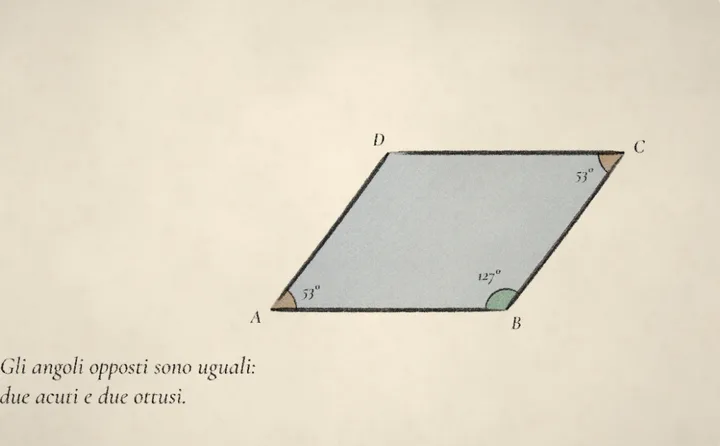
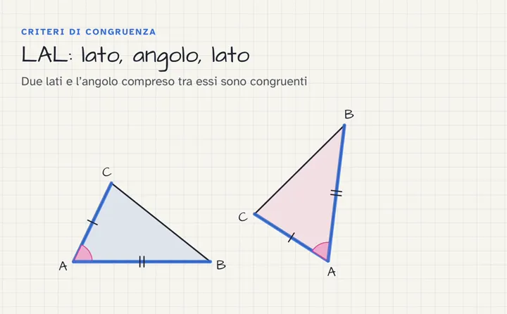
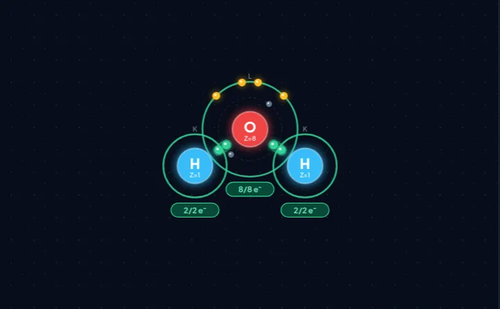
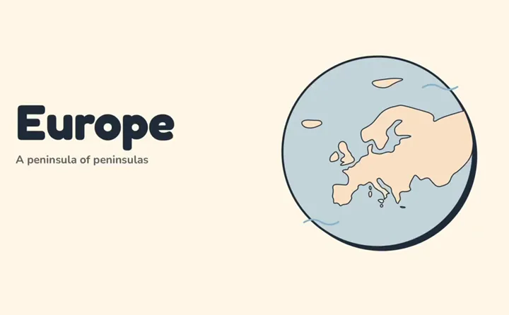
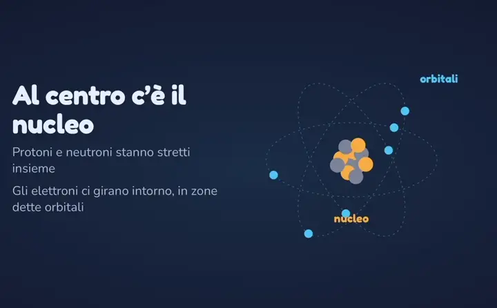
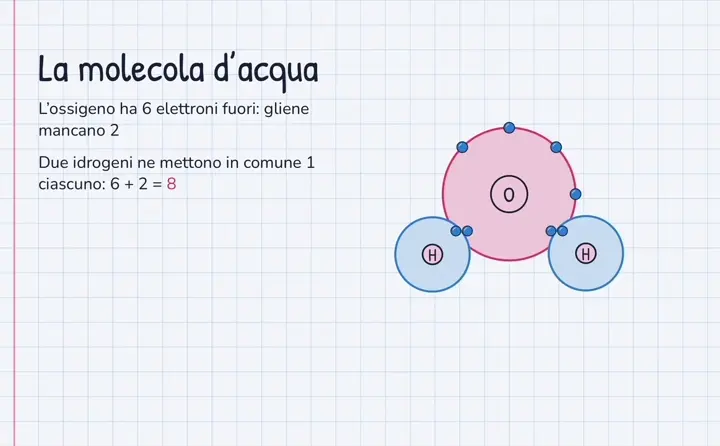

Animazioni
Film, video e laboratori interattivi per la scuola media.

Il parallelogramma
Lati, angoli, diagonali, perimetro e area. Poi rettangolo, rombo e quadrato.

I triangoli
Classificazione per lati e per angoli, costruibilità e criteri di congruenza.

La regola dell'ottetto
Costruisci 8 molecole e guarda come gli atomi condividono o cedono elettroni.

L'Europa, penisola di penisole
Confini, penisole e grandi regioni d'Europa. Video in inglese.

Viaggio dentro la materia: l'atomo
Atomi, particelle subatomiche, quark, isotopi e la tavola periodica.

Atomi e legami chimici
Isotopi, modello di Bohr, regola dell'ottetto e legami ionico, covalente e metallico.